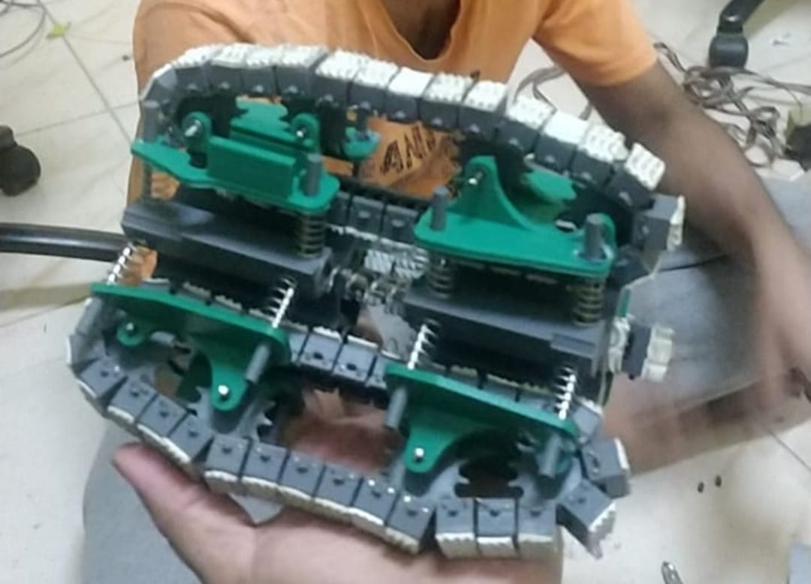
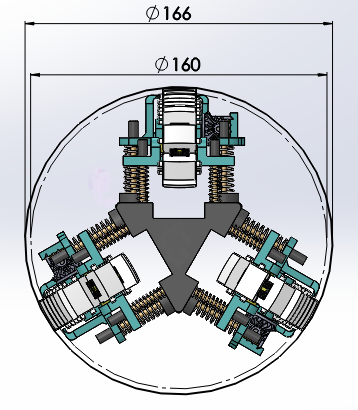
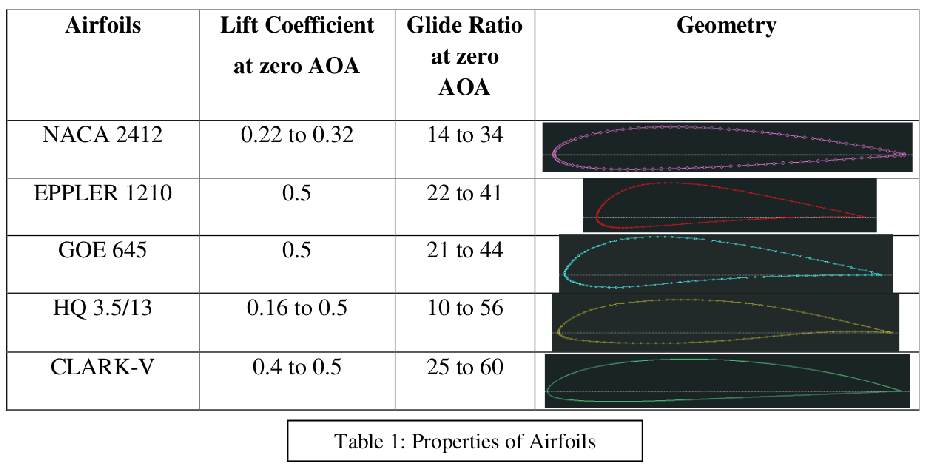
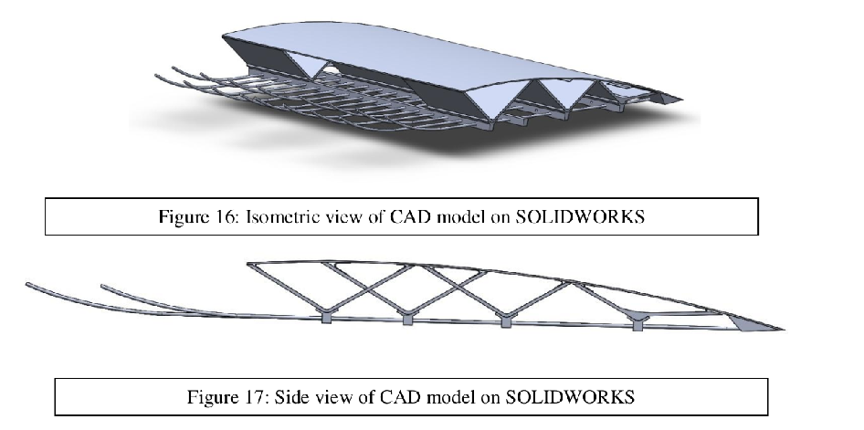
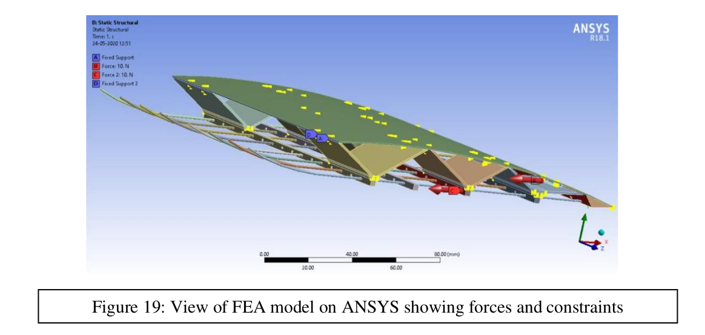
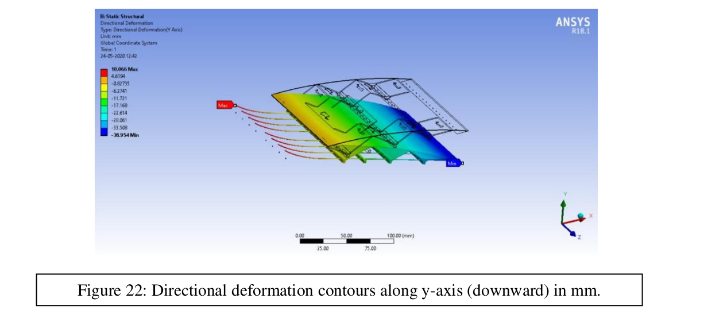
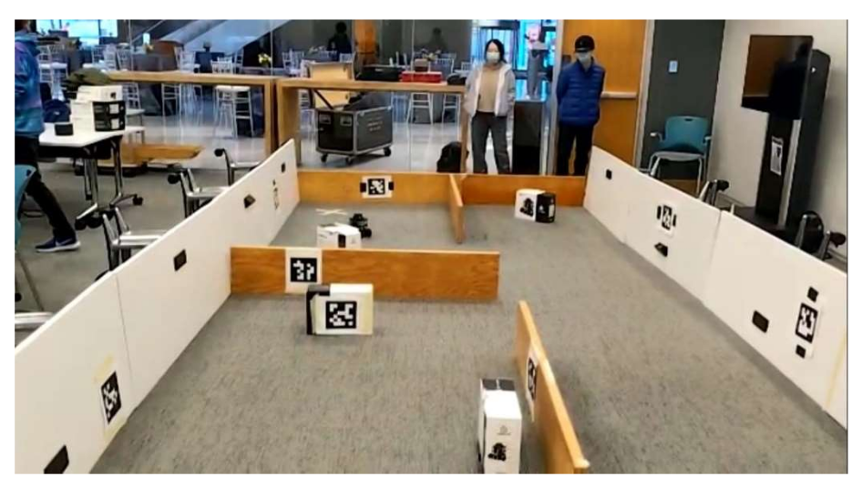
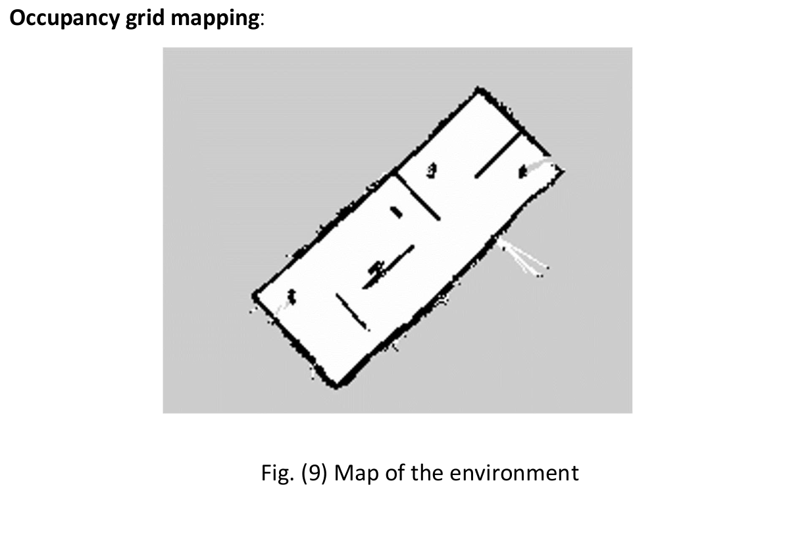

My name is Pavan Rathnakar Shetty
I am a Robotics and Automation enthusiast, an Athelete, but more importantly I am an inquisitive Learner
I am a Robotics and Automation enthusiast, an Athelete, but more importantly I am an inquisitive Learner
The aim of the project was to add pick and drop functionality on a Syena Q-10 drone by adding a manipulator. The arm was designed using Solidworks which has 2 DOF, activated by servo motors and an End Effector called the gripper has 1 DOF, activated by mini DC motor connected to a simple gear assembly of worm and bevel. The manipulator components where 3D printed along with the base using Ultimaker Cura 2.0+. The video below shows initial stages of develeopment, where apriltag detection and pose estimation was done to perform pick and drop using a Pi camera. Inverse Kinematics was performed to get joint angles for the manipulator to grasp. Later the entire setup was mounted on a Syena Q-10 drone in Altitude control mode by howering over a target object and performing manipulation controlled by Raspberry Pi integrated with ROS. Partial success was obtained using this experiment because of the bulkiness and instabilty of the drone especially effected because of the crosswinds. The video below demonstrates the partial success.
The aim of the project was to improvise an already existing pipe climber. Additionally the pipe climber which we built could compensate T junctions and 90 degree bends towards and against the gravity. This was a noval design which was run through a series of reccursive design and experimentation both in real and simulation. The motion capabilities were analysed using MSC Adams by converting the complex structure into a simple model. To reduce the number of moving components in the model and to decrease the computational load, the tracks were simplified into roller wheels. Each module houses three roller wheels in the simplified model. Therefore, the contact patch provided by the tracks to the pipe walls are reduced from 10 contact regions to 3 contact regions per module. The robot is simulated in a pipe-network designed according to ASME B16.9 standard NPS 11 and schedule 40. The simulations were conducted for four test case scenarios in the pipe network consisting of Vertical section, Elbow section (90 ◦ bend), Horizontal section and the U-section (180 ◦ ) for different orientations. The total distance of the pipe structure is D pipe = 3,023.49mm. The distance travelled by the robot in pipe is calculated from center of the robot body and the track’s individual distance travelled is calculated from the center roller wheel mounted in each modules. The input (U) is given a constant angular velocity of 120rpm (ω i = 120rpm) and motion of the robot including the track velocities are studied in the simulation.  
Modern fixed wing aircraft have multiple wing elements and control surfaces which are assembled to form a single wing. This renders a high amount of skin friction and interface drag due to the increased number of wetted interfaces between the elements, and the elements’ surfaces. This directly affects the range of the aircraft. A shape-morphing wing is an attractive solution to the problem posed here since it is a single element which can change its camber according to the requirements. It can improve the performance of the aircraft.
Selection of airfoil was a challenging task as it involved various parameters like lift, drag, stall angles, ease of manufacturing, structural stability and the required shape. Based on the above requirements, we shortlisted a few airfoils which have been given in Table 1. The parameters considered while choosing the baseline airfoil were as follows:- Space to accommodate the servos. Thickness of the trailing edge (moderately high value preferred). Glide Ratio in morphed and baseline configurations (higher values preferred). Lift Coefficient in morphed and baseline configurations (higher values preferred). Bottom surface curvature (convex or flat bottom preferred).
The 3D model was created entirely on SOLIDWORKS. The model consisted of six parts-the upper sheet, trusses, wires, guides, trailing edge and hinges. The upper sheet would be fixed at its forward edge, and the trailing edge would be made up of a single solid piece of aluminium. The wires run from the servo arms (not depicted in the model) till the trailing edge, which contains holes in which the wires would be fixed rigidly. The wires pass through guides which are located at the bottom of the trusses. There are four such guides. The trusses are rigidly fixed to the guides, and are attached to the top surface by means of hinges.
The FEA model is given in Fig.18 and 19. The front face of the upper surface and the edge of the truss has been selected as fixed supports i.e. constrained in all degrees of freedom. Two forces of 10N each are acting in the negative x-direction on the guides, which effectively simulates the pull of the wires. The trusses, upper surface and hinges were assigned X-Ray PET film as the material, with Young’s Modulus-4GPa, density-1400kg/m^3, poisson ratio- 0.1. The guides, wires and trailing edge were assigned Aluminium with Young’s Modulus- 70GPa, Poisson ratio-0.35, density-2700 kg/m^3.
The first result that was checked was the downward deflection of the trailing edge. This was consistent with our expectations, and its value was 38.954mm. One remarkable observation that can be made is that the wires have moved in the upward direction by approximately 10mm, which is consistent with the pulling of a servo. The deflection contours are seen in Fig. 22.
In this project, a complete autonomous system to perform reconnaissance in a simulated disaster environment has been implemented using a Turtlebot3 mobile robot. Onboard the robot, we use a Raspberry Pi 3 with the Robot Operating System (ROS) framework for Simultaneous Localization and Mapping. move_base package from the ROS navigation stack has been used to command the robot to move around the environment. Lidar scanners present on the robot were used to generate occupancy grid maps using the GMapping package. explore- lite frontier exploration package was used to explore the environment. Raspberry-Pi camera was used to detect the Apriltags which are assumed to be the hostages in the disaster environment using the apriltag_ros package. Lookup transforms were used to estimate the position of the Apriltag with respect to map frame.
A model arena that mimics a disaster environment was created for demonstration of our algorithm as to how well it performs. The arena consisted of 15 Apriltags, each of size 16cm was present, and a series of walls in a maze-like fashion for the robot to explore. The total size of the arena was approximately 30 ft. x 10 ft.
The video in the link below shows the entire trajectory of the robot exploration, mapping, and the number of tags that was detected by the robot. It also shows the Rviz Localization and Mapping of the entire exploration. The robot was able to map the entire arena in under 3 minutes, and was able to detect 13 out of the 15 apriltags.